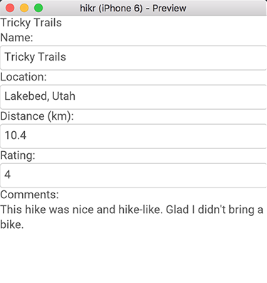

Introduction
In this first part of the tutorial, we're going to start fleshing out the first view of our app; the Edit Hike view. This view will display and allow us to edit the data for a single hike. This means we'll be building both the view, which represents the visual components we'll interact with, and its view model, which represents the editable data that's presented by the view.
The final code for this chapter is available here.
Creating our Project
The first thing we'll do is create our project, and we'll call it "hikr". Just like in the quickstart, this can be done using the Fuse dashboard or the Fuse command like tools. For example:
fuse create app hikr [optional path]This should create the following directory structure:
$ tree
.
|- MainView.ux
|- hikr.unoprojThese two files are all it takes to build a Fuse app! MainView.ux will contain the UX code for the top-level view of our app, and hikr.unoproj will contain various project settings. Everything we'll be covering in this chapter will happen inside MainView.ux.
If the project was created from the command line, open it in Fuse:
cd hikr
fuse previewRemember that we can also start previews on our devices, and now's a pretty good time to do so. See our Preview and Export guide for info on how to get those up and running.
Displaying our First Hike
Now that we've got our project and our previews are up and running, it's time to start displaying things and fleshing out our data model. We won't worry about setting up the different pages in our app or anything just yet - that comes later. For now, we'll start by simply displaying some text.
If we open up MainView.ux in a text editor, it should look something like this:
<App>
</App>As we can see, it's just an empty App tag, representing a clean slate for us to start working on. Also note that in UX, tags are case-sensitive; App is different than app, for example.
Now we'll add a basic Text element:
<App>
<Text>Tricky Trails</Text>
</App>At this point, we'll save MainView.ux, and immediately, our various previews will update, showing our changes! When working with Fuse, it's recommended to save often, as this can help catch errors and typos immediately, instead of having them pile up and dealing with them later on down the line.
As we can see, Text is used to display a read-only block of text. This is great, but you may have noticed this text is partially covered by the status bar if you're previewing on your device, so we'll go ahead and fix that real quick. To do this, all we have to do is wrap our Text element inside a ClientPanel tag, like so:
<App>
<ClientPanel>
<Text>Tricky Trails</Text>
</ClientPanel>
</App>A ClientPanel is really just a container that will reserve space at the top and bottom of the screen for various OS-specific visuals, which is perfect in our case.
Before we move on, let's also place our Text element inside a StackPanel. A StackPanel is a sort of container for multiple elements that will stack each of its child elements vertically or horizontally. In our case, we only have one element, so it won't really do anything, but it'll be a good idea to make one now so we don't have to worry about it later. The code to do this is pretty simple:
<App>
<ClientPanel>
<StackPanel>
<Text>Tricky Trails</Text>
</StackPanel>
</ClientPanel>
</App>App Model and Databinding
Cool! So now we've got some text on the screen, but it's displaying a hardcoded string from UX. Since this view will eventually be used to edit one of our hikes, we'll need this text to be dynamic instead. This is where our app model comes in, which we'll implement in JavaScript (pure EcmaScript 6). Then, we'll use databinding to tie it all together.
Before we can add JavaScript to our app, we need to make a small change to our project file. Since Fuse allows us to write both plain vanilla JavaScript and the newer, more modern, EcmaScript 6 (ES6), we need to tell Fuse which way it should interpret JavaScript files.
To do this, open up the file called hikr.unoproj. It currently looks like this:
{
"RootNamespace":"",
"Packages": [
"Fuse",
"FuseJS"
],
"Includes": [
"*"
]
}It is a file consisting of pure JSON, and describes various properties about our project. Under the "includes" field, you'll see a single * inside a pair of square brackets. This basically means that we let Fuse include all files it recognizes by default. This does not include JavaScript files however, so we'll have to instruct Fuse on how we want those files inluded. Change the includes part to the following:
"Includes": [
"*",
"**.js:FuseJS"
]The above basically means that all files in this folder and all its subfolders ending with .js, should be interpreted by FuseJS as files containing ES6 code, and should participate in automatic change detection (more on this a bit later).
At this point, we're ready to add some code to our project.
Lets start by adding a new .js file which, for now, we'll include all our apps logic in. Lets call it App.js, and put in the root folder of our project. We also export a class called App, with a single field called name, by adding the following code:
export default class App {
constructor() {
this.name = "Tricky Trails";
}
}The last thing we need to do, is to tell Fuse to use this class as the main model for our app. We can specify this using the Model property on the App tag in our MainView.js file.
<App Model="App">Now we've got a value in JS exposed to UX, but we're still displaying the hardcoded string from UX. Let's change the Text element to display our JS variable's value instead:
<Text Value="{name}" />Notice the curly braces around name? This is what we call a databinding, and is how we specify that the Value of this Text element should be bound to the value of the field named name.
Changing values
What we're going to do is add a TextBox to our UI. TextBox represents a simple single-line text input field with basic styling, which is perfect for editing name in our case. Lets go ahead and do that:
<App Model="App">
<ClientPanel>
<StackPanel>
<Text Value="{name}" />
<TextBox Value="{name}" />
</StackPanel>
</ClientPanel>
</App>Now, when we save this, we'll have both a Text and a TextBox element displaying the value of the name field. When we edit the contents of the TextBox, we can see that the Text's value also changes! This is because databinding to TextBox's value property automatically gives us a two-way databinding, which means that not only will the UI update to display incoming values, but it can make changes to these values as well.
Fuse achieves this by automatically detecting changes to the app model, and then propagating those back down to the UI. Pretty cool, right?
While we're at it, let's add a caption for it as well by simply adding another Text element above it:
<Text>Name:</Text>
<TextBox Value="{name}" />Looking good!
Adding Additional Fields
Now that we've got an editor working, let's flesh out our view and model a bit more to include the other fields we're interested in. In particular, we're going to want a hike to have the following fields:
- name (which we've already got covered)
- location
- distance (km)
- rating (1-5)
- comments
constructor() {
this.name = "Tricky Trails";
this.location = "Lakebed, Utah";
this.distance = 10.4;
this.rating = 4;
this.comments = "This hike was nice and hike-like. Glad I didn't bring a bike.";
}Then, we'll add a bunch of TextBox's that we'll bind to these fields (along with some helpful captions as well):
<Text>Location:</Text>
<TextBox Value="{location}" />
<Text>Distance (km):</Text>
<TextBox Value="{distance}" InputHint="Decimal" />
<Text>Rating:</Text>
<TextBox Value="{rating}" InputHint="Integer" />
<Text>Comments:</Text>
<TextBox Value="{comments}" />Notice how we've also added InputHints to the TextBox's that will modify numeric data. This is a small improvement that will ensure a more appropriate numeric keyboard will come up when editing these fields on iOS and Android.
Some Finishing Touches
At this point, we should have a fully-working editor for all of our values. Sweet! While we're at it, let's make a couple additional improvements.
In particular, let's take a look at the input field for comments:

As we can see, there's a bit too much text to fit on just this one line. It would be much nicer if this editor showed all of the text and allowed us to insert multiple lines for this field.
The fix for this is super simple - instead of using a TextBox, we'll use a TextView, and ensure its TextWrapping property is set to Wrap, like so:
<Text>Comments:</Text>
<TextView Value="{comments}" TextWrapping="Wrap" />This gives us exactly what we were after - a multi-line editor with text wrapping displaying all of the text in the field. Of course, it's a bit hard to see, but we'll fix that in a later chapter about styling. For now, let's just continue to focus on blocking out the major parts of our app.
The last thing we'll do is ensure that all of our value editors are accessible, even when they take up a lot of space (for example, when the comments value is quite long). To do this, we'll simply place our StackPanel inside a ScrollView, like so:
<ScrollView>
<StackPanel>
<Text Value="{name}" />
<Text>Name:</Text>
<TextBox Value="{name}" />
<Text>Location:</Text>
<TextBox Value="{location}" />
<Text>Distance (km):</Text>
<TextBox Value="{distance}" InputHint="Decimal" />
<Text>Rating:</Text>
<TextBox Value="{rating}" InputHint="Integer" />
<Text>Comments:</Text>
<TextView Value="{comments}" TextWrapping="Wrap" />
</StackPanel>
</ScrollView>This will allow us to scroll the form up/down as necessary in order to edit the fields we want. Great!
Our Progress So Far
At this point, we've got a view for displaying/editing the data for a specific hike. It looks something like this:

And here's what our final code should look like:
<App Model="App">
<ClientPanel>
<ScrollView>
<StackPanel>
<Text>Name:</Text>
<TextBox Value="{name}" />
<Text>Location:</Text>
<TextBox Value="{location}" />
<Text>Distance (km):</Text>
<TextBox Value="{distance}" InputHint="Decimal" />
<Text>Rating:</Text>
<TextBox Value="{rating}" InputHint="Integer" />
<Text>Comments:</Text>
<TextView Value="{comments}" TextWrapping="Wrap" />
</StackPanel>
</ScrollView>
</ClientPanel>
</App>export default class App {
constructor() {
this.name = "Tricky Trails";
this.location = "Lakebed, Utah";
this.distance = 10.4;
this.rating = 4;
this.comments = "This hike was nice and hike-like. Glad I didn't bring a bike.";
}
}So as we can see, it doesn't take much to get a view like this up and running. And we've already covered a lot of ground, including:
- Creating/previewing/modifying a project
- Creating an app model using JavaScript
- Data binding to fields in our model
- Building a view to display and interact with our app model
What's Next
Of course, this view only displays one hike, and what we're after is a list of hikes we can display/modify. In the next chapter, we'll expand on what we've built so far by introducing multiple hikes and the ability to select one to display and edit. So when you're ready to go, let's dive in!
The final code for this chapter is available here.